英雄传说：闪之轨迹I·完美攻略·终版（4）
英雄传说：闪之轨迹I完美攻略·终版
出品：浅闻小鉴攻略组
作者：夏浅线。
文本精校：Lip
5月29日·特别实习日
近郊都市托利斯塔
公园·黑猫对话·有小剧情
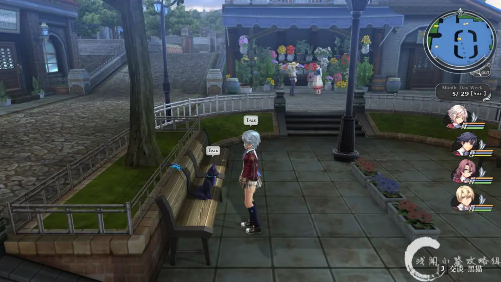
近郊都市托利斯塔·托利斯塔站·存档·进入车站·触发剧情
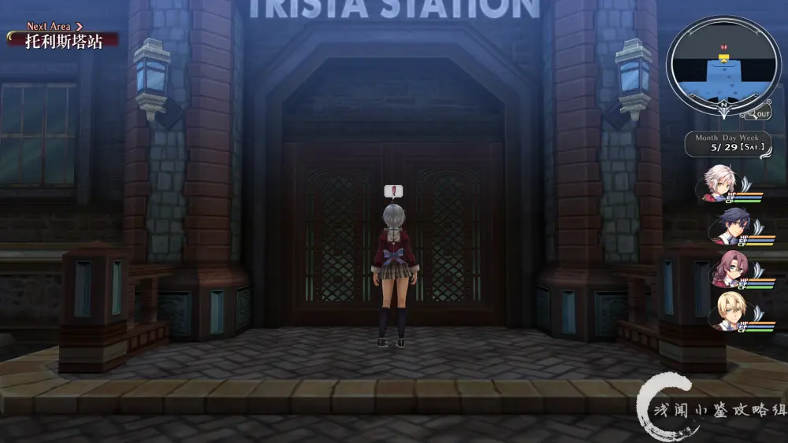
剧情后·站员玛蒂达对话·选择购买车票
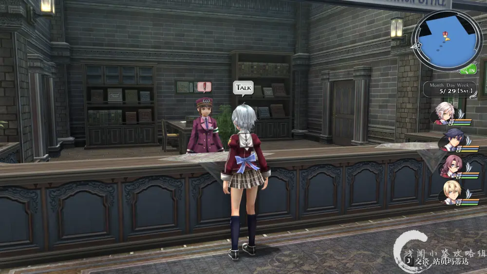
在车上与四个人分别对话
全部对话后·开始游玩「Blade」·和每位角色对战的第一次都会+50Link值·多玩无益
全部对战后·存档·结束交谈
公都巴利亚哈特
中央广场
高级餐厅《索露榭拉》进入·触发剧情
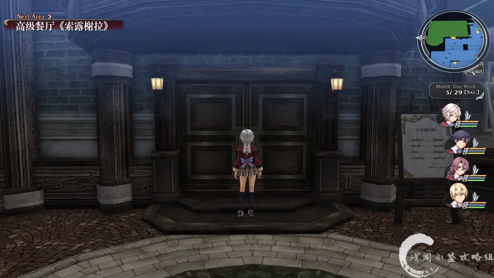
支线
寻找沐浴盐
①5月29日·在公都巴利亚哈特·《艾梅拉妲酒店》内·剧情接取此任务
②高级餐厅《索露榭拉》侧门·哈桑对话
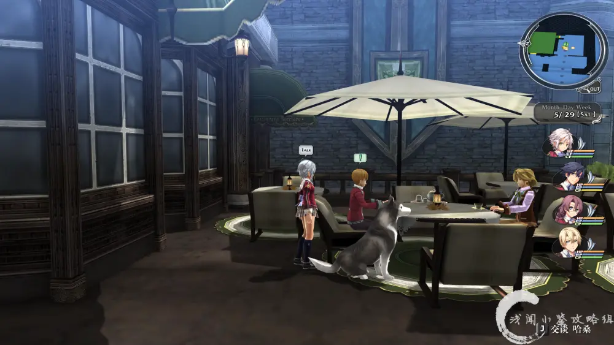
支线暂停
贵族街
公都巴利亚哈特领邦军据点前·触发剧情
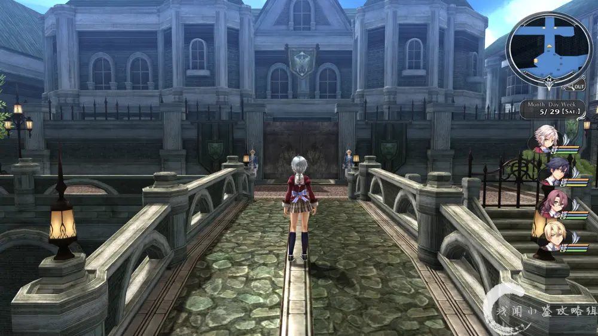
★宅邸②·厨房内·罗娜对话·并且获得风味药草茶食谱
风味药草茶：新鲜香草/蜂蜜糖浆/百药精酒/魔兽明胶各1个
独门料理：盖乌斯
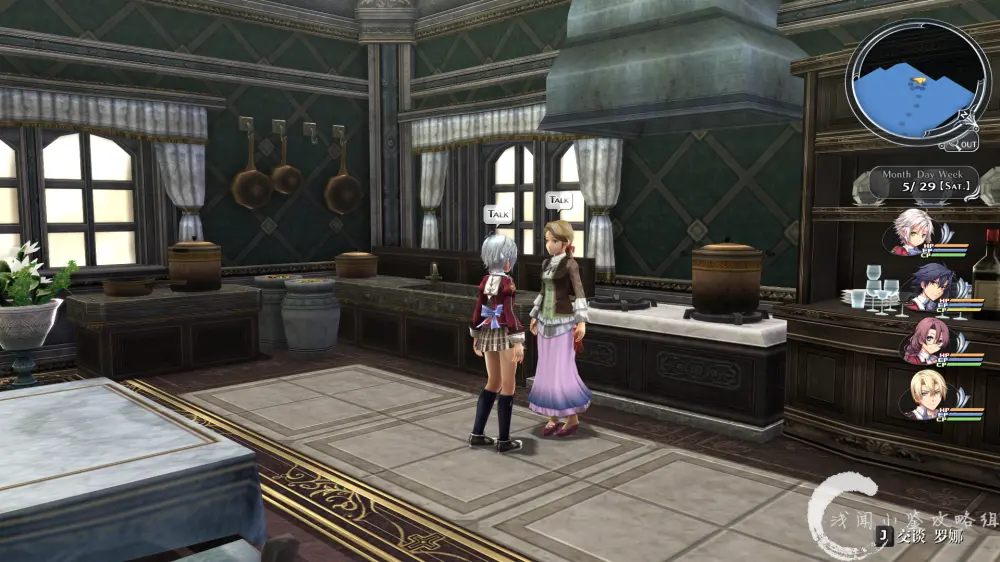
站前大道
北克鲁琴街道前的长椅上·拉比对话·有小剧情
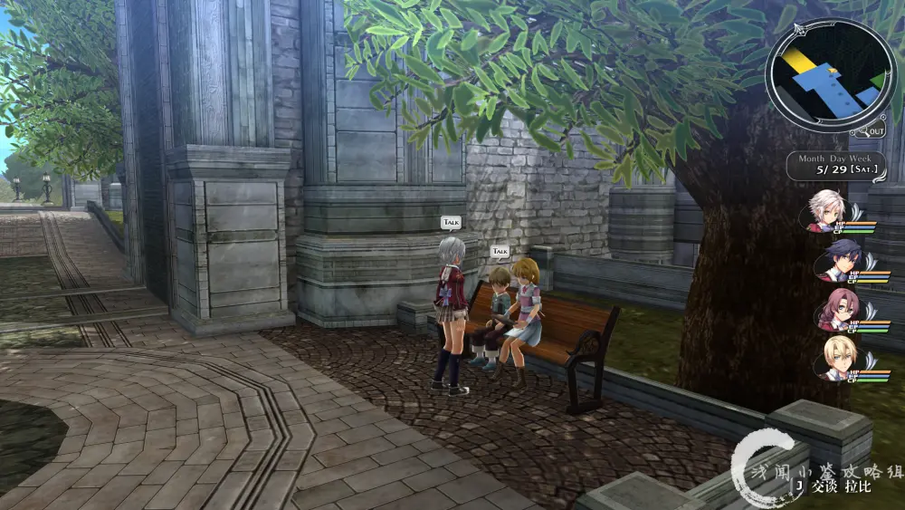
高级品专卖《克莉斯蒂的店》
★一楼·食材·杂货《亨德森商会》·掌柜亨德森可买：呱呱吊饰（后续需要）
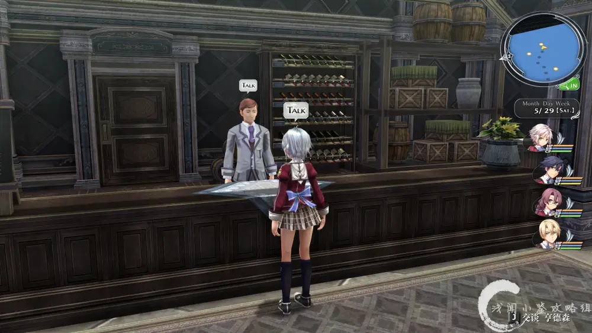
★二楼·《弗特南书店》·柜台史坦可买：红耀石文库版③/红耀石文库版④
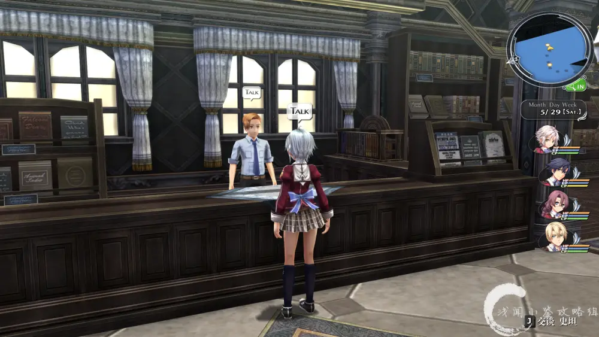
工匠街
主线
无杂质的半宝石
①5月29日·在公都巴利亚哈特·《艾梅拉妲酒店》内·剧情接取此任务
②《透纳珠宝店》内·柜台布鲁克对话
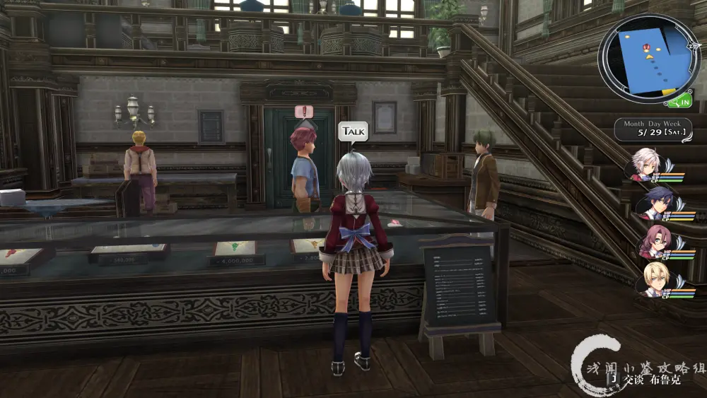
主线暂停
北克鲁琴街道
宝箱3个：七种耀晶片各150个·复活药·大治愈术（回路）
本区域新敌人共2个：颠茄兽·蛋蛇
记得收集情报
如果背包内不够5个魔兽油脂·建议在这里打足·后续需要
北克鲁琴街道钓鱼点：岩穴鱼
钓鱼种类达到六种·钓师阶级升级为：褐竿钓师
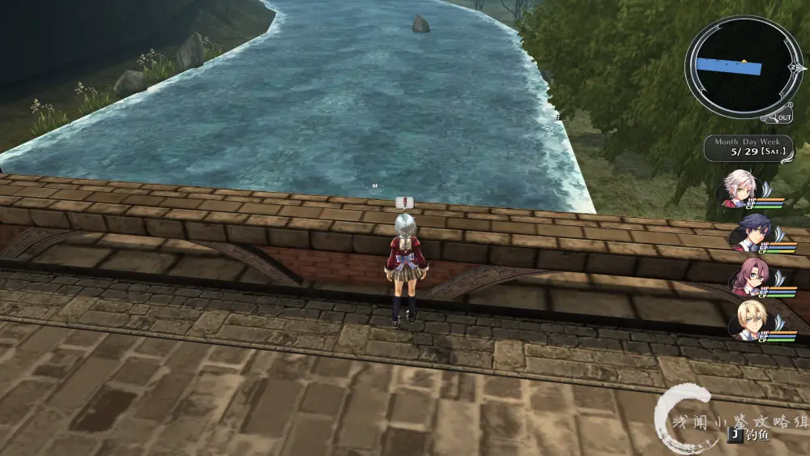
主线
无杂质的半宝石
③走到红色感叹号处·调查·触发剧情
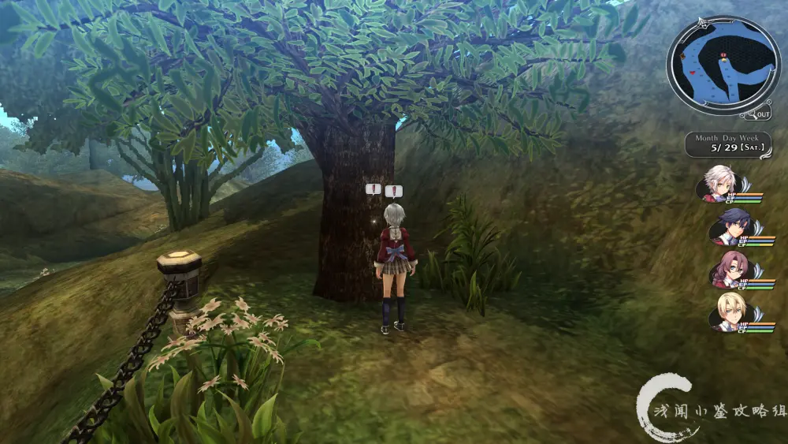
④回到公都巴利亚哈特·工匠街《透纳珠宝店》内·柜台布鲁克对话
获得奖励：幸运（回路）
获得AP：4
主线完成
奥洛克斯峡谷道①
宝箱1个：痊愈之药
本区域新敌人共2个：小恶龟·幼生双角兽
记得收集情报
奥洛克斯峡谷道②
宝箱3个：七种耀晶片各150个·熏风（回路）·黑暗之刃（回路）
本区域新敌人共6个：巨大螳螂·人面鸟·电熊·攻击野犬·双角兽
支线怪：命运纺织者
记得收集情报
主线
奥洛克斯峡谷道的通缉魔兽
①5月29日·在公都巴利亚哈特·《艾梅拉妲酒店》内·剧情接取此任务
②奥洛克斯峡谷道②·走到红色圆圈处·存档！！！·前走·触发战斗
BOSS：命运纺织者
怪弱水/风
记得收集情报
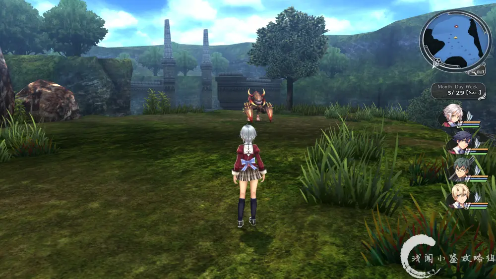
主线暂停
奥洛克斯峡谷道③
宝箱2个：诱饵·精神2（回路）
本区域无新的敌人
支线
寻找沐浴盐
③走到绿色感叹号处·调查·触发剧情
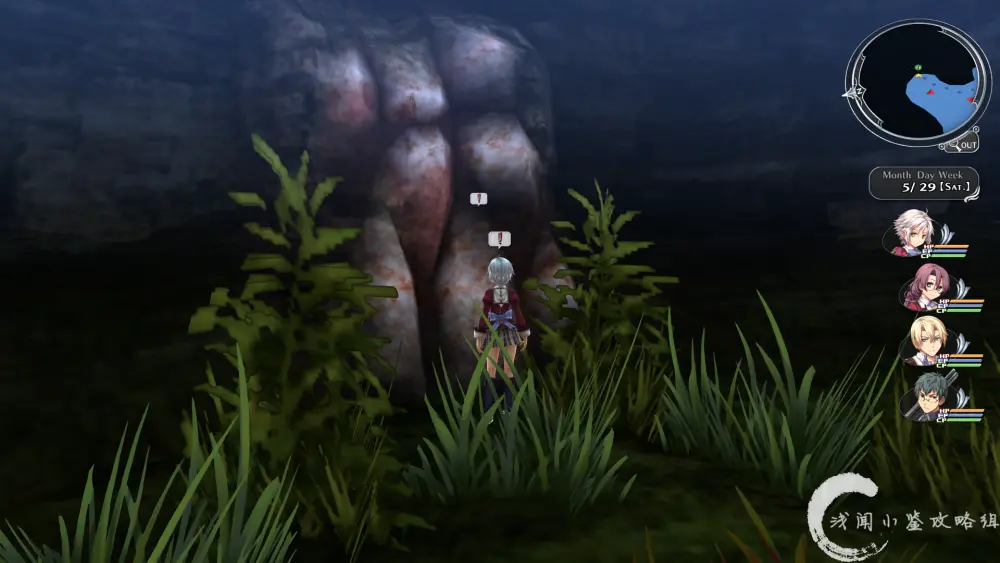
支线暂停
领邦军·奥洛克斯峡堡垒
主线
奥洛克斯峡谷道的通缉魔兽
③走到红色感叹号处·领邦军兵士对话
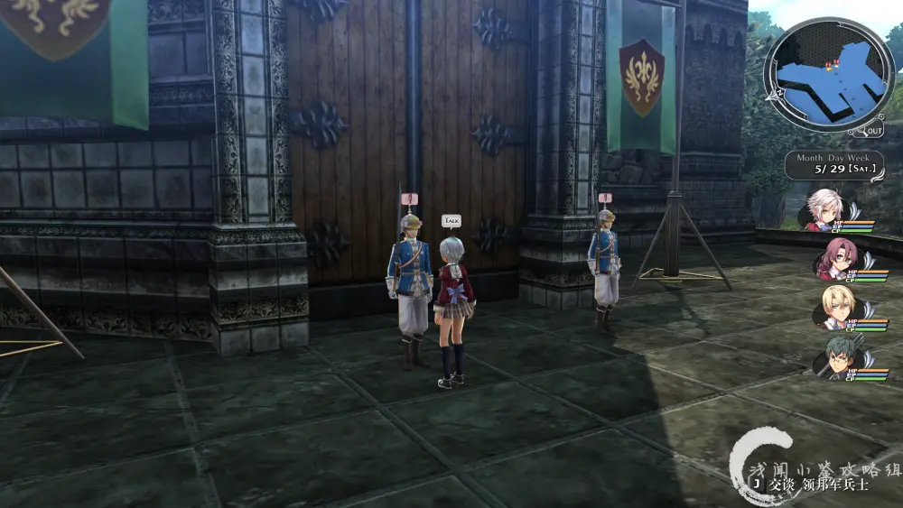
获得奖励：电光之箭R（回路）
获得AP：4
主线完成
★休息站《三日月亭》内·弗米对话·获得：红月的罗赛④卷
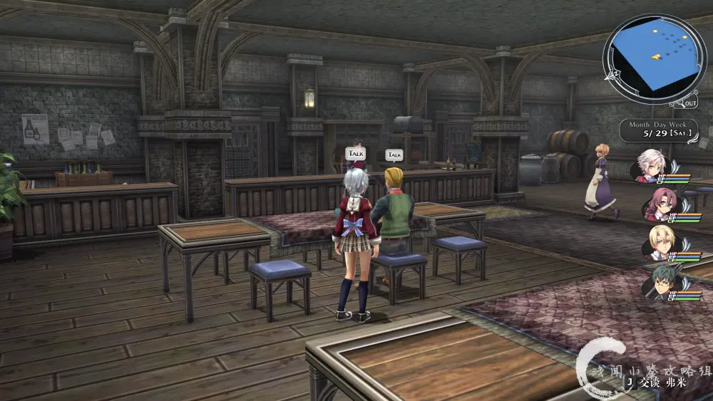
支线
寻找沐浴盐
④回到公都巴利亚哈特·中央广场·高级餐厅《索露榭拉》侧门·哈桑对话
获得奖励：银之沙漏（饰品）
获得AP：4
支线完成
确认全部结束后·回到《艾梅拉妲酒店》前·存档·返回旅馆·触发剧情
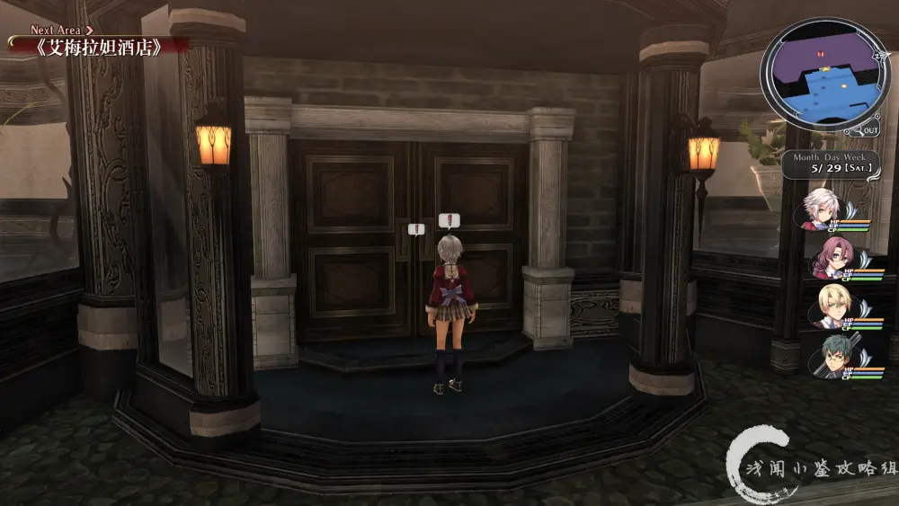
报告清单：第二章小结算②
第二章小结算②·总AP：12
奥洛克斯峡谷道的通缉魔兽——AP4
无杂质的半宝石——AP4
寻找沐浴盐——AP4
5月30日·特别实习日
公都巴利亚哈特
★剧情获得尤西斯人物信息：侧室之子
站前大道
★北克鲁琴街道前的长椅上·雅妮特对话·获得：红月的罗赛⑤卷
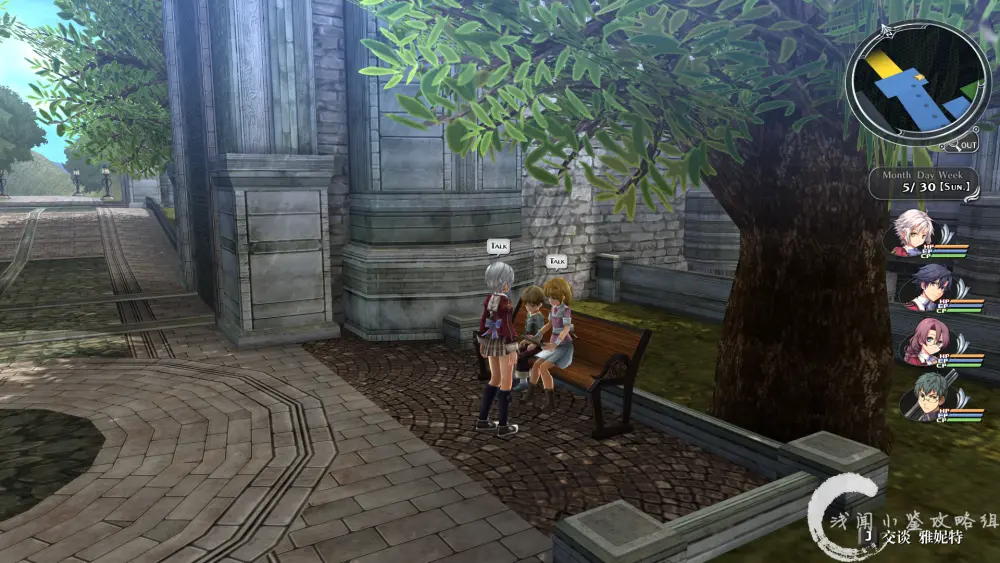
中央广场
支线
怀念的菜色
①5月30日·在公都巴利亚哈特·《艾梅拉妲酒店》内·剧情接取此任务
②高级餐厅《索露榭拉》内·哈蒙德老板对话
任务要求：魔兽油脂5个
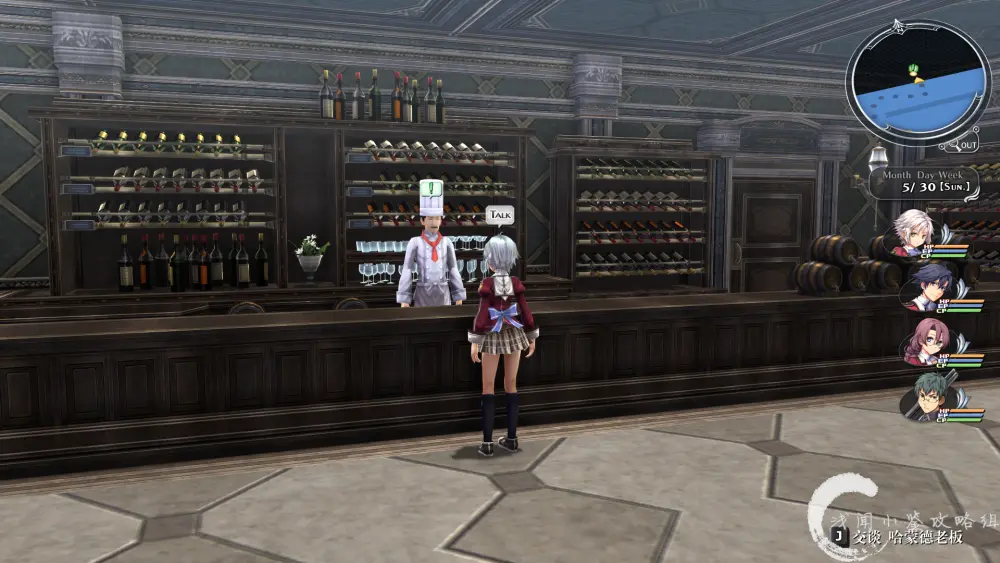
③巴利亚哈特大教堂内·塔吉娜修女对话
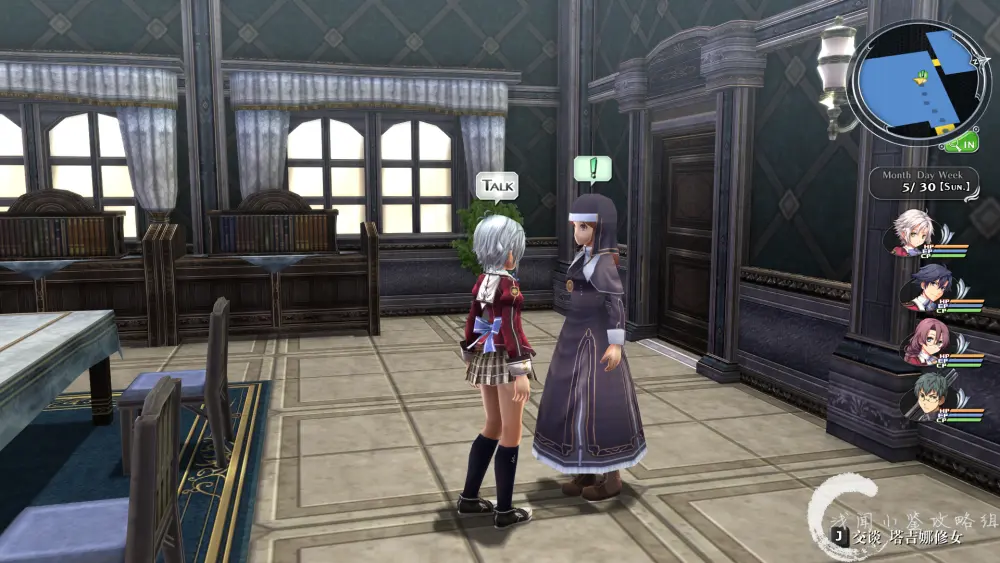
④回到高级餐厅《索露榭拉》内·哈蒙德老板对话
★剧情并且获得香浓巧达汤食谱
获得奖励：特制香草巧达汤5个
获得AP：4
支线完成
香浓巧达汤：鲜奶/熟成奶酪/软绵绵马铃薯/魔兽白肉/魔兽之壳各1个
独门料理：尤西斯
隐藏支线
护送旅行者
①5月30日·站前大道·巴利亚哈特站的前方长椅处·利库斯对话（非必要）
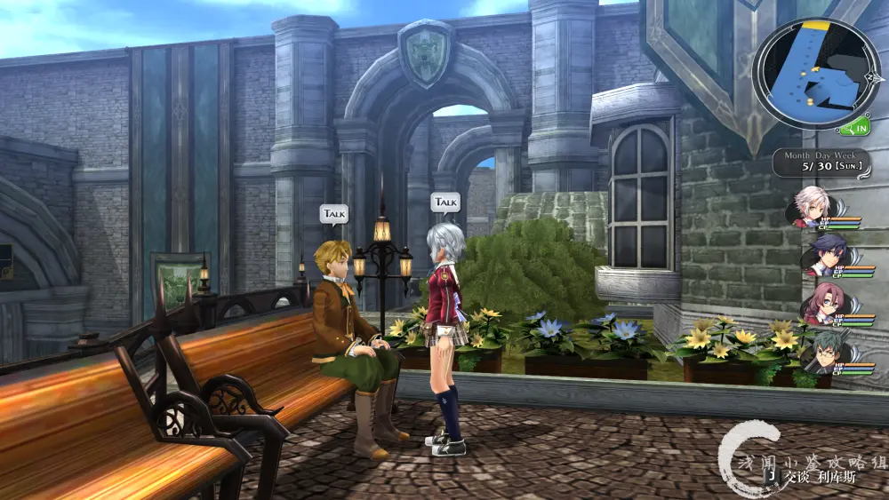
②奥洛克斯峡谷道·领邦军·奥洛克斯堡垒·安敦对话·送他到街上·接取此任务
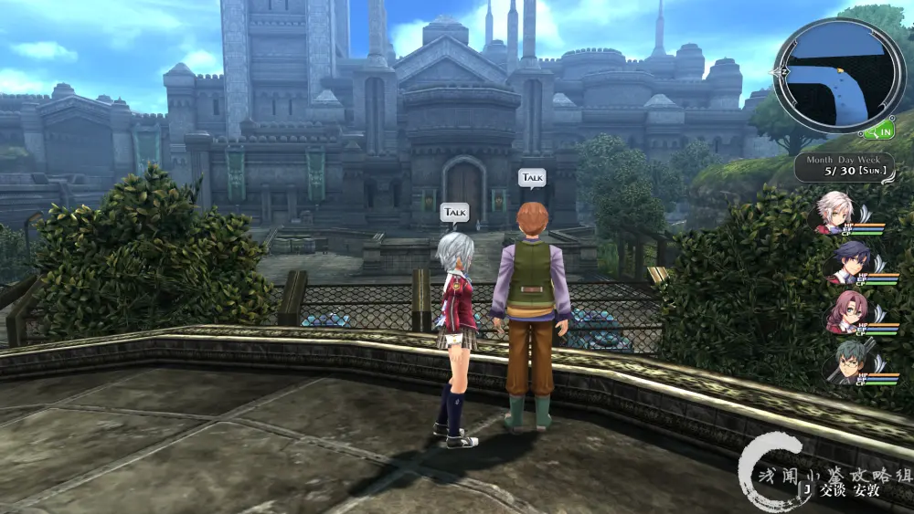
③回到公都巴利亚哈特·触发剧情
获得奖励：困困咪西（后续需要）
获得AP：4
支线完成
北克鲁琴街道
本区域新敌人共1个：
支线怪：三头颠茄兽
记得收集情报
主线
北克鲁琴街道的通缉魔兽
①5月30日·在公都巴利亚哈特·《艾梅拉妲酒店》内·剧情接取此任务
②北克鲁琴街道·走到红色圆圈处·存档！！！·前走·触发战斗
BOSS：三头颠茄兽
怪弱火
怪有全体黑暗状态攻击·建议攻击之前带上防黑暗饰品
记得收集情报
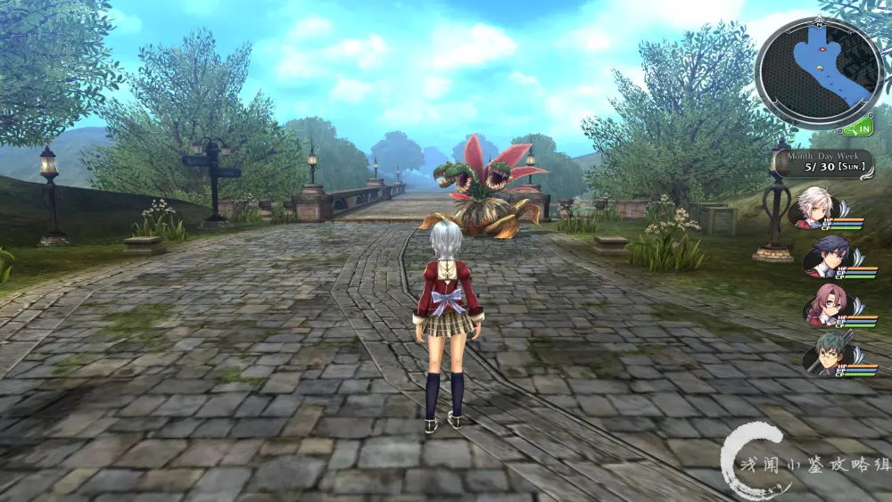
③回到公都巴利亚哈特·触发剧情
获得奖励：地言铃（回路）
获得AP：4
主线完成
站前大道
全部结束后·可准备一些防气绝状态的饰品
走到红色感叹号处·调查门·进入
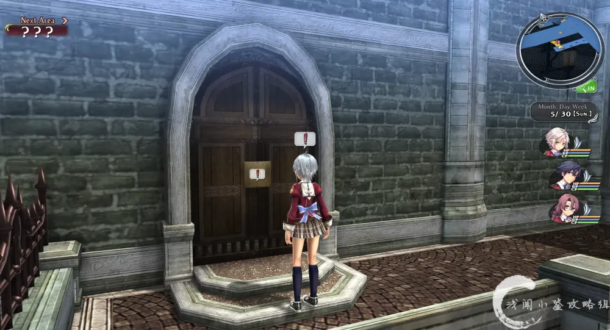
公都地下水路①
回复装置：1个
机关：1个
宝箱1个：还魂粉
本区域新敌人共2个：白金虫·宝石老鼠
记得收集情报
公都地下水路②
宝箱3个：结晶防护·复（回路）·炼气（回路）·圣灵药
本区域新敌人共2个：白翼猫·冰晶软体兽
记得收集情报
走到下图位置
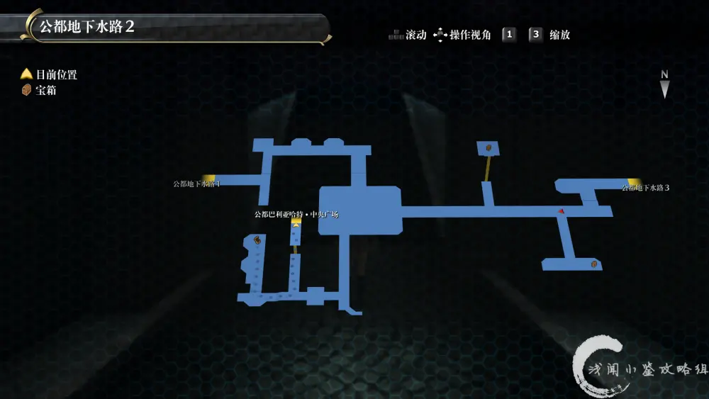
到下图位置后·前走过图
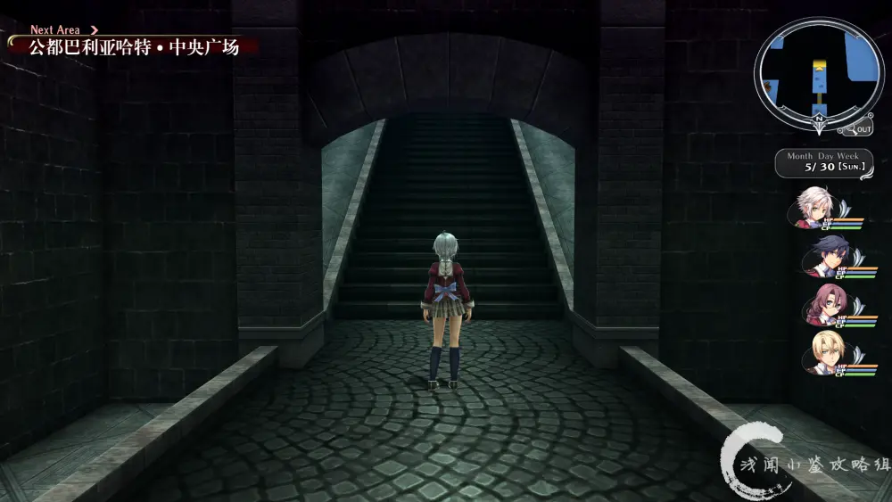
中心广场
宝箱1个：中回复术R（回路）
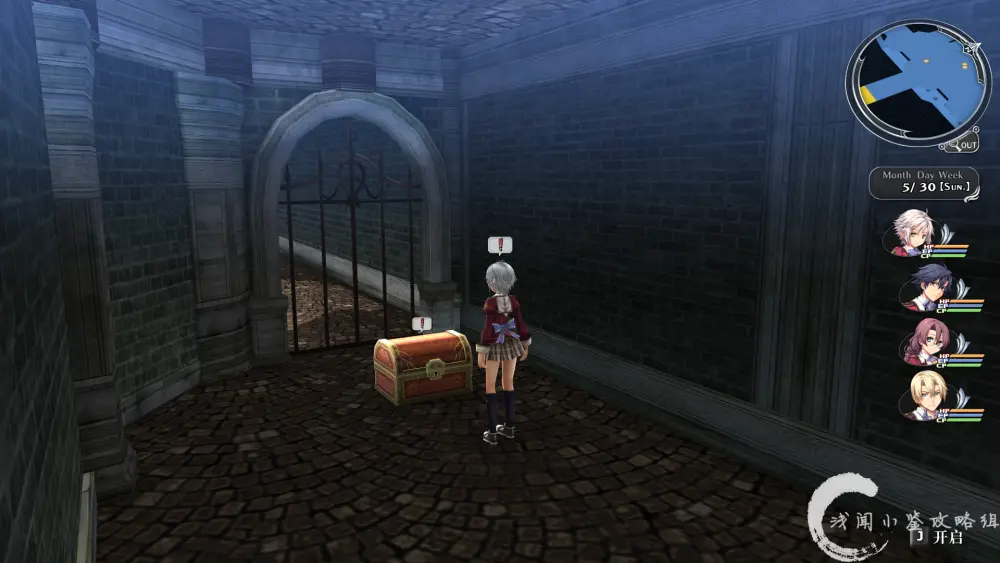
回到公都地下水路②
公都地下水路③
机关：1个
宝箱4个：EP填充剂II·银色荆棘R（回路）·痊愈之药·驱动1（回路）
本区域无新的敌人
走到红色感叹号处·调查·触发剧情
★剧情获得菲人物信息：猎兵团
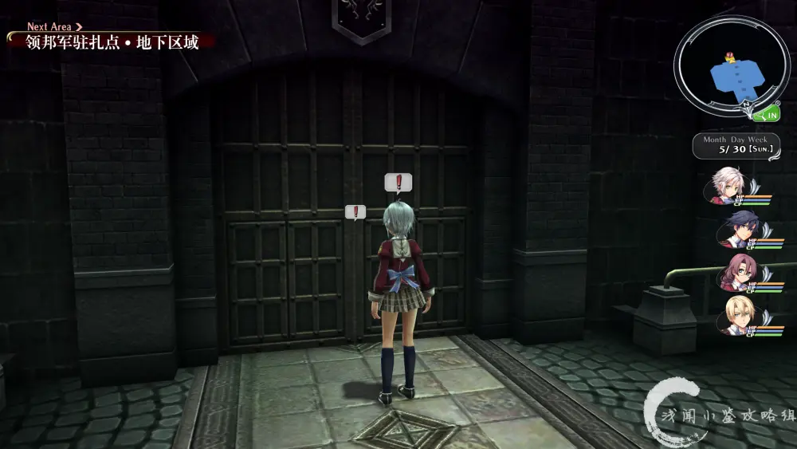
领邦军驻扎点·地下区域
高级回复装置：1个
本区域新敌人共1个：领邦军士兵
记得收集情报
在高级回复装置处存档！！！·走到红色感叹号处·触发剧情·战斗
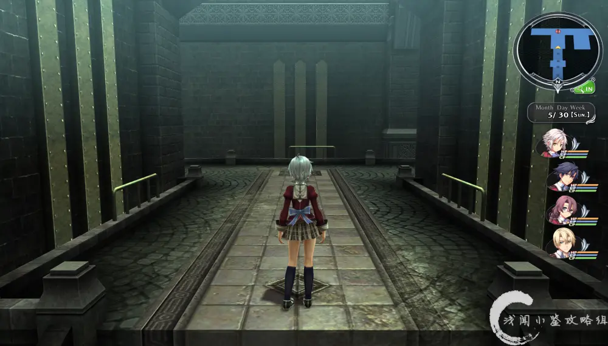
公都地下水路②
本区域新敌人共2个：警备猎犬B·警备猎犬R
记得收集情报
第二章结束
报告清单：第二章
第二章·总AP：55
升级学生阶级：乙叁级·获得：纪律徽章（饰品）
调查旧校舍地下②——AP5
代课老师的请托——AP3+2·剧情中全部选择正确·获得AP：2
配送教官用图书——AP4
领取鲜花——AP4
奥洛克斯峡谷道的通缉魔兽——AP4
无杂质的半宝石——AP4
寻找沐浴盐——AP4
北克鲁琴街道的通缉魔兽——AP4
怀念的菜色——AP4
护送旅行者——AP4
<正确答案·军事学>——AP1
<看破魔法的伎俩>——AP1
<实战测试·5月>——AP4+1·战斗中解除敌人魔法驱动·获得AP：1
<特别实习·5月>——AP6

随便聊聊：
闪之轨迹I·完美攻略·终版·正式连载
希望各位会喜欢
如果大家觉得攻略写的还可以 欢迎大家充电支持我们
您的每一次充电 是对攻略组的支持和鞭策
也是对我们作品的认可 以及继续做下去的动力！
小浅在这里先拜谢各位老爷小姐（鞠躬
另外攻略连载完结后·群内将提供付费攻略的Pdf版下载
欢迎各位催更
Q群：907289369
等待各位来撩